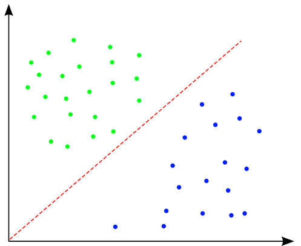
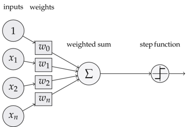
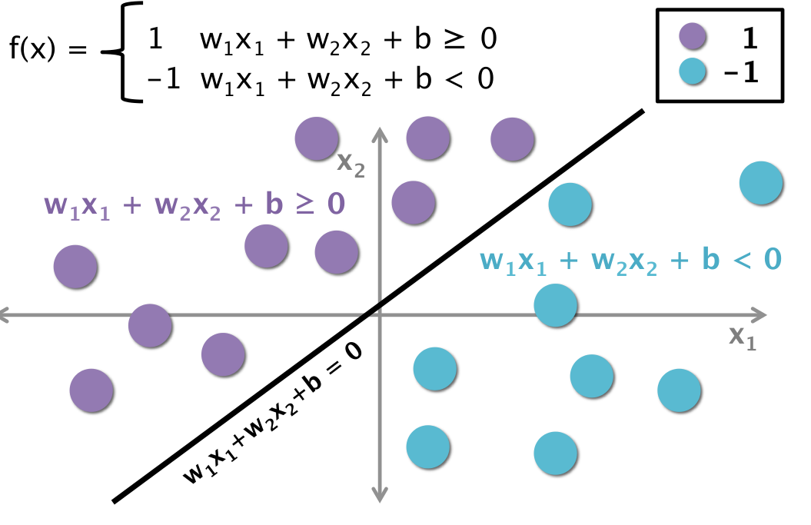

Perceptron basics and geometric interpretation
The perceptron is a binary classifier. For any input $$x\subset\Re^n$$, a perceptron maps that vector to the set $${0,1}$$. The perceptron is used in this way to map each point in some feature space to two possible labels. It is used for supervised learning tasks, where a set of or training points is provided together with a set of true labels. The perceptron can learn from these examples and assign labels to previously unseen points.
The perceptron is a parametric model in that, once it is trained, it has a set number of weights that it uses to assign labels to new points. This article covers the exact training process, by which an ideal set of weights is found, in a later section. For this section we will explain how a perceptron uses these weights, and what they correspond to mathematically and functionally. Note that the terms “set of weights” and “weight vector” are used interchangeably.
Part of the perceptron model is that it computes an explicit decision boundary, which is very closely related to the weights. A decision boundary is a line, plane, or hyper-plane, (depending on the dimensionality of the input,) that is used to partition the feature space into two disjoint regions corresponding to either class. Every point above a decision boundary is assigned one class, every point below it is assigned the other.

Training a perceptron is functionally equivalent to finding just such a line for a training set, with the hope that the line would work for any new point. This is based, like all classifiers, on the assumption that all points of a class should inhabit the same region of feature space, and that different classes should inhabit different regions of feature space. Even though the perceptron classifies a new point by performing mathematical operations on it, we can visualize the predictions it would make with this decision boundary.
The perceptron, like all models, does this by using intelligent mathematical operations. It performs a set of operations on any given vector in the feature space, and the output of those operations will correspond to the value of the assigned class. Below is a formal explanation of the process of classification.
In its basic form the perceptron can be functionally visualized as below.

In this case, the vector x is an input vector of dimensionality $$n$$, $$x \subset\Re^n$$, whose elements of are the values $$x_1, \cdots, x_n$$. Note that a ‘1’ is concatenated to the front of any input vector. These values are all multiplied by a corresponding weight ($$w_0$$ to $$w_n$$). w1 to wn are called correlating weights, and w0, which is multiplied against the ‘1,’ is called the bias. These products are all summed, generating a ‘weighted sum’ of the inputs. Note that this weighted sum is equal to the dot product of the x vector and a vector of the weights, $$w$$, such that
$$ \begin{eqnarray} w0 + x_1w_1 + x_2w_2 + \cdots + x_nw_n = \vec{w} \cdot \vec{x} \end{eqnarray}
$$
where $$\vec{x} = < 1, x_1, x_2, \cdots, x_n >, \vec{w} = < w_0, w_1, \cdots, w_n >$$
This weighted sum is then put through a step function, which is a function with an output space of {0,1} that has the form:
$$ s(x) = \left{ \begin{array}{ll} 1 & \quad x \geq 0 \ 0 & \quad x < 0 \end{array} \right.
$$
Put simply, this function just checks the sign of its input, and returns 0 if the input is negative, 1 otherwise.
Taken all together, the perceptron classification operation, or model, is simply
$$\hat{y} = s(\vec{w} \cdot \vec{x}) $$
Where the left side of the equation is the perceptron models predicted label for a point, $$s$$ is the step function described above, and the dot product $$w \cdot x$$ is equal to the weighted sum, as described above. Notice how this operation corresponds perfectly to the diagram of the perceptron structure shown above.
Let’s consider the decision boundary. Our classification operation can be visualized with the decision boundary, where the decision boundary is given simply by the equation:
$$\vec{w} \cdot \vec{x} = 0$$
Which defines a hyperplane in n dimensional space, with intercept $$w_0$$.

Notice that the region where the dot product of the input and weights is positive, which is where our classifier would return a 1, will fall above the decision boundary, and the region where the product is negative, where any point would be classified as negative, will fall below the decision boundary.